Geopolítica

Geopolítica
El ataque con drones en Kuwait expone la fragilidad del personal militar privado europeo
El fallecimiento de dos contratistas italianos de Rheinmetall en una base de radares revela la estrategia de Irán contra la infraestructura defensiva del Golfo. El incidente escala la tensión táctica mientras Teherán y Washington disputan el control del estrecho de Ormuz.

Más de Geopolítica

La tragedia oculta tras la inundación de la mina ilegal de oro en Java
Trece personas perdieron la vida y otras trece siguen desaparecidas tras quedar atrapadas en un socavón clandestino en Indonesia. Detrás de la emergencia climática se esconde una red de extracción desregulada tolerada por la necesidad económica.
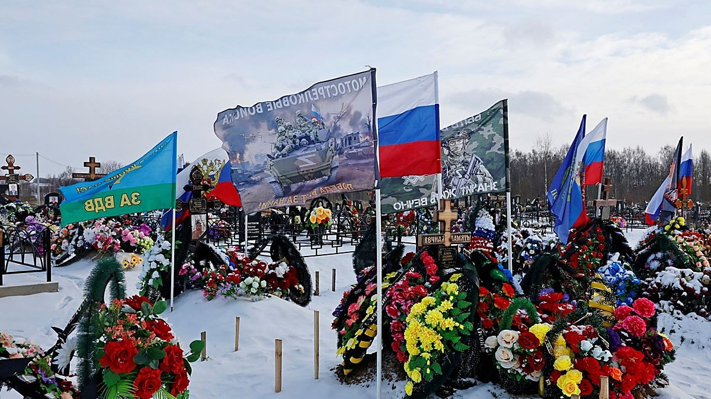
VIDEOGeopolíticaUn análisis de datos filtrados eleva a setecientos mil los soldados rusos muertos en Ucrania
Investigaciones basadas en registros internos de la agencia Rosstat exponen una dimensión inédita de la mortalidad militar rusa y su impacto demográfico estructural tras casi cinco años de guerra.
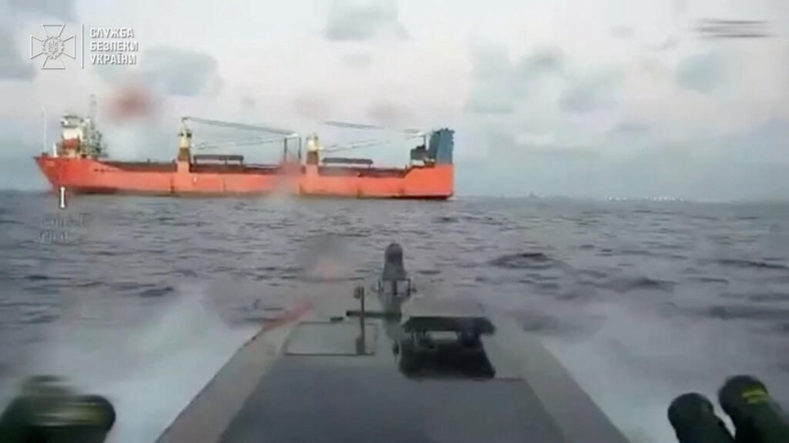
VIDEOGeopolíticaLa guerra entre Ucrania y Rusia se traslada al norte de África tras un ataque militar en Bengasi
La muerte de dos soldados libios en un ataque ucraniano contra navíos rusos en Bengasi confirma la apertura de un frente secundario en el Mediterráneo. Kiev busca estrangular la logística de Moscú fuera del escenario bélico europeo.
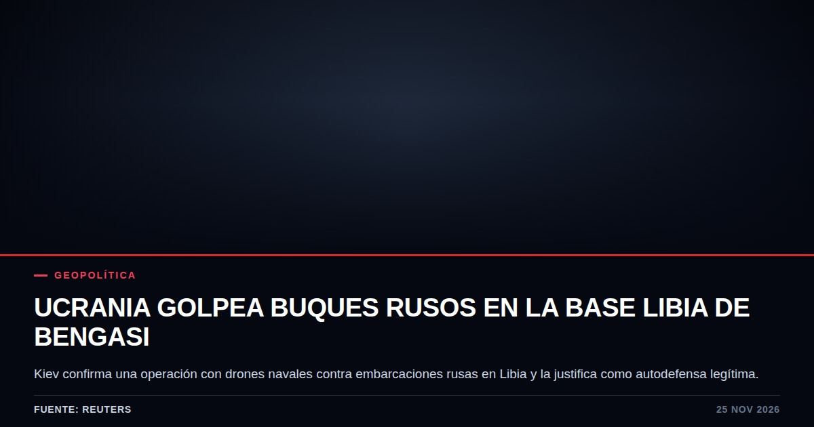
VIDEOGeopolíticaLa guerra invisible llega al Mediterráneo: Ucrania golpea buques rusos en Libia
El gobierno de Kiev reivindicó un ataque con drones navales contra embarcaciones rusas en el puerto de Bengasi. La acción desplaza el conflicto directo hacia el norte de África y redefine los riesgos logísticos del Kremlin.
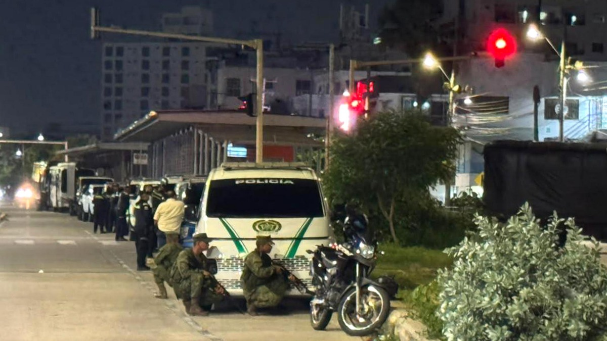
VIDEOGeopolíticaToma de rehenes en Cartagena expone la vulnerabilidad de la seguridad colombiana
Un ataque armado en el principal destino turístico de Colombia enciende las alarmas internacionales. El suceso pone en duda la capacidad estatal para blindar enclaves económicos clave.
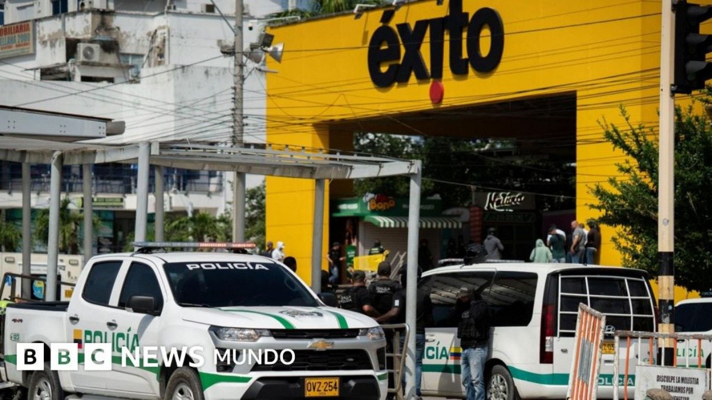
VIDEOGeopolíticaLa toma de rehenes en Cartagena y el pulso por la seguridad urbana en Colombia
Un atraco frustrado a un camión de valores desató una crisis de rehenes en Cartagena que movilizó a la cúpula militar y al presidente Abelardo de la Espriella. Las autoridades descartan terrorismo, mientras crece el temor ciudadano.
La condena a Huawei en Estados Unidos y el uso del derecho como arma geopolítica
Un tribunal federal halló culpable al gigante tecnológico chino de múltiples cargos por fraude y robo de secretos comerciales. Detrás del fallo judicial se vislumbra una estrategia sistemática de contención económica.
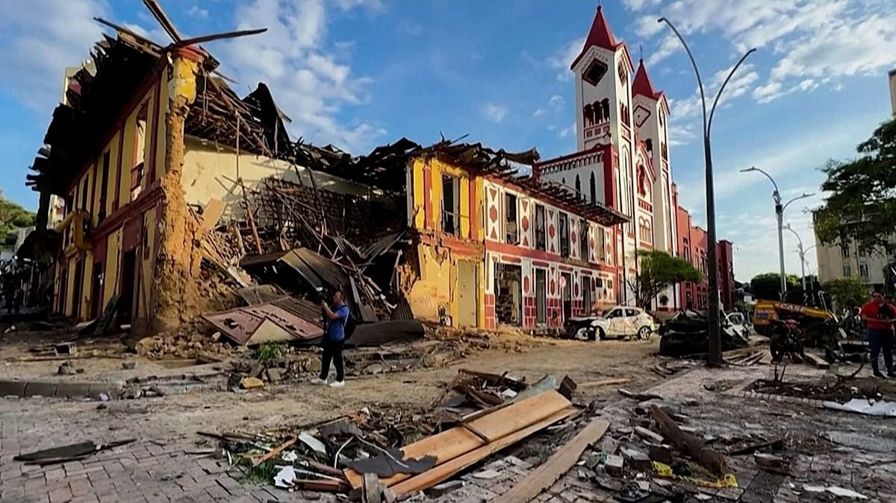
VIDEOGeopolíticaLa escalada de atentados con explosivos desnuda la fractura de seguridad en Colombia
El atentado en Villavicencio que dejó 25 heridos confirma el uso sistemático de tácticas de guerra asimétrica por parte de grupos armados. Las cifras oficiales del Ministerio de Defensa revelan una ofensiva incesante que desafía el control estatal.
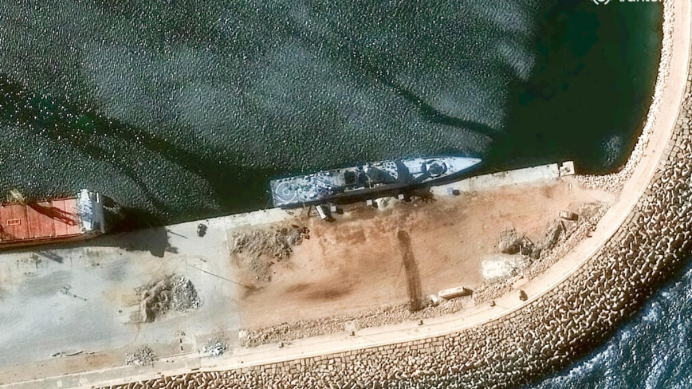
GeopolíticaUcrania extiende su pulso naval al Mediterráneo mientras Rusia bombardea Zaporizhia
Las operaciones contra buques rusos cerca de Bengasi generan tensiones diplomáticas con Trípoli. En el frente oriental, bombardeos rusos dejan víctimas civiles en Zaporizhia y Krivói Rog.
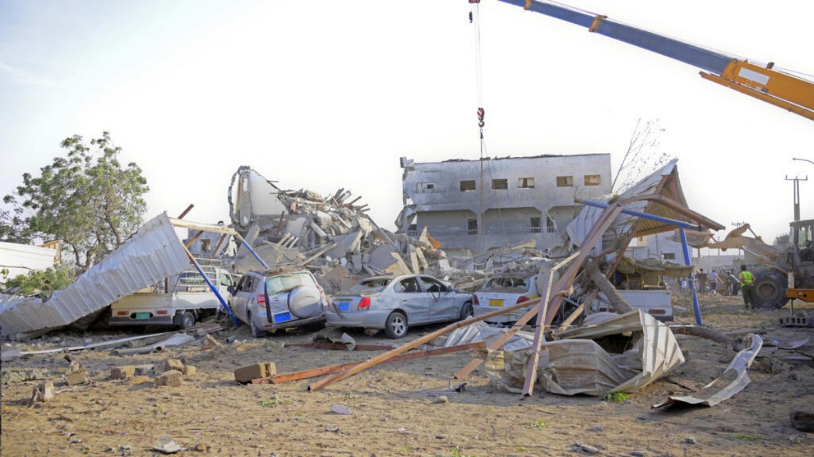
GeopolíticaLos bombardeos saudíes en el suroeste yemení buscan blindar la estratégica Adén
Ataques aéreos contra convoyes dejaron al menos 25 muertos o desaparecidos en Yemen. La ofensiva intenta frenar la marcha de las fuerzas hutíes hacia la sede del Gobierno respaldado por Riad.
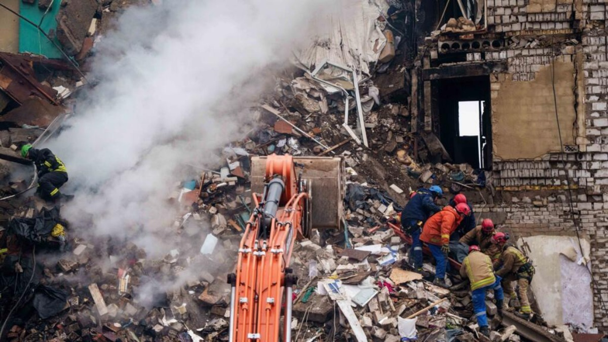
GeopolíticaLa ofensiva rusa sobre la región de Kiev escala el impacto civil y compromete el suministro hídrico
Una nueva oleada de ataques aéreos sobre el perímetro de la capital ucraniana deja al menos 15 muertos y compromete los servicios básicos urbanos. El deterioro hídrico y habitacional acentúa la vulnerabilidad de la población ante la inminencia del invierno.
 VIDEOGeopolítica
VIDEOGeopolíticaActualización sobre Kiev: elevan a 15 los muertos tras intensificarse los bombardeos rusos
Las labores de salvamento en la periferia de la capital ucraniana confirmaron un incremento en la cifra de víctimas mortales tras los recientes ataques rusos. Mientras las brigadas rescatan a sobrevivientes entre los escombros, la estrategia bélica apunta a desgastar la retaguardia civil ante la llegada del invierno.
 VIDEOGeopolítica
VIDEOGeopolíticaAtaque de drones en la región de Kiev deja diez muertos y expone la vulnerabilidad residencial
El rescate de un menor tras catorce horas bajo los escombros en Dymer contrasta con un saldo mortal que evidencia el impacto sostenido sobre zonas civiles.
 VIDEOGeopolítica
VIDEOGeopolíticaRusia escala los bombardeos sobre la región de Kiev ante la llegada del invierno
Una ola de ataques con misiles y drones deja al menos 14 muertos en los alrededores de la capital ucraniana. La ofensiva se produce tras las advertencias del Kremlin por los daños provocados en el puente de Crimea.
El vertedero atómico de Fukushima y la grieta silenciosa del Pacífico
El lento desmantelamiento de la central nipona evidencia los límites de la ingeniería radiológica. Detrás del discurso de contención se oculta un severo pasivo geopolítico e industrial.
 VIDEOGeopolítica
VIDEOGeopolíticaLa ofensiva rusa sobre Lviv expone la vulnerabilidad logística en el oeste de Ucrania
Un bombardeo masivo con más de 400 drones y 110 misiles golpeó Lviv y otras regiones, dejando dos muertos y daños severos en infraestructura crítica.
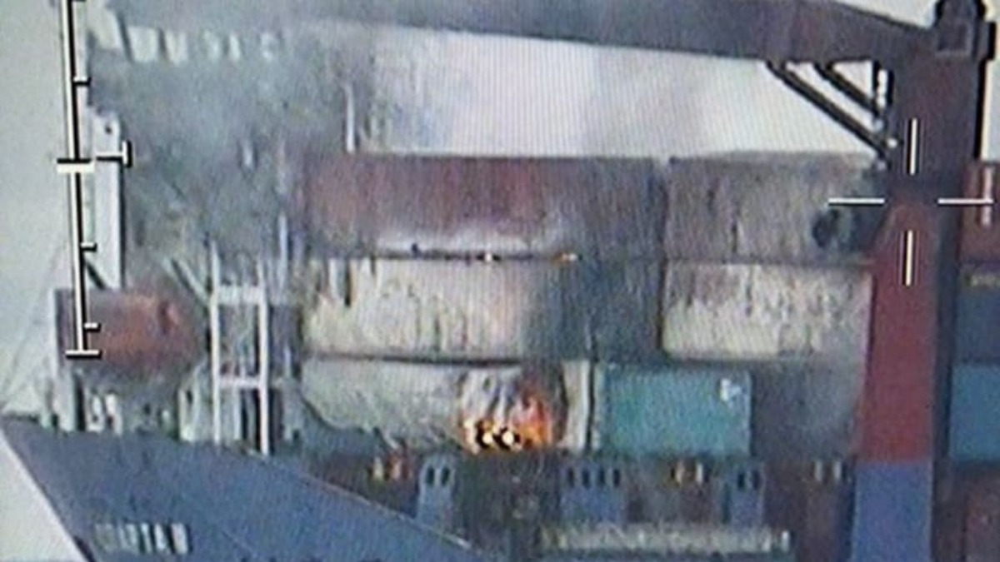
VIDEOGeopolíticaEl ataque al Sparta II en el Báltico desplaza la interdicción naval al flanco norte
Un carguero ruso vinculado a la logística militar de Moscú quedó a la deriva en aguas de Finlandia tras ser alcanzado por drones. El hecho demuestra la vulnerabilidad del suministro mercante hacia el enclave de Kaliningrado.
 VIDEOGeopolítica
VIDEOGeopolíticaAtaques rusos contra infraestructura energética en Ucrania dejan dos muertos y evidencian la estrategia de desgaste industrial
Un bombardeo nocturno con drones y misiles contra la central térmica de Krivói Rog y subestaciones clave expone la vulnerabilidad de la red eléctrica que sostiene la capacidad militar ucraniana.
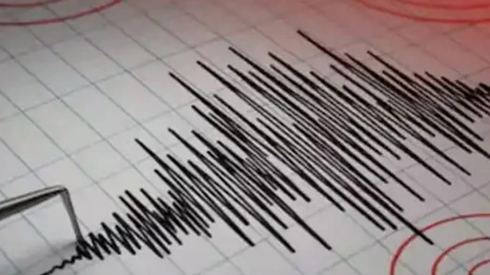
VIDEOGeopolíticaUn sismo de magnitud 6,7 sacude el centro de Perú sin dejar daños inmediatos
Un movimiento telúrico con epicentro en Junín sacudió la sierra central y la capital peruana, activando los protocolos de emergencia sin reportes oficiales de víctimas.

Netanyahu y el peligroso eco de 1995: la retórica que amenaza con incendiar Israel
El primer ministro israelí recurre a la demonización de parlamentarios palestinos para asegurar su supervivencia política. Un análisis profundo sobre los paralelismos con el asesinato de Isaac Rabin.
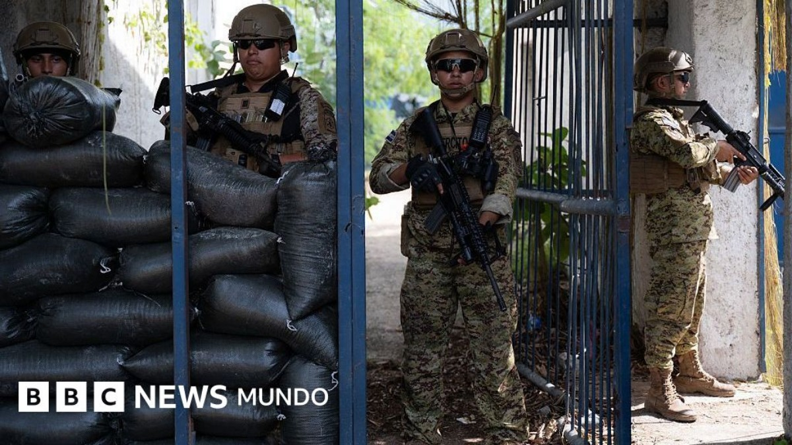
VIDEOGeopolíticaLa tragedia con explosivos en Haití que golpea por primera vez al contingente militar salvadoreño
Tres efectivos murieron tras una detonación en un campamento en Puerto Príncipe, marcando un giro trágico en el despliegue ordenado por Nayib Bukele.
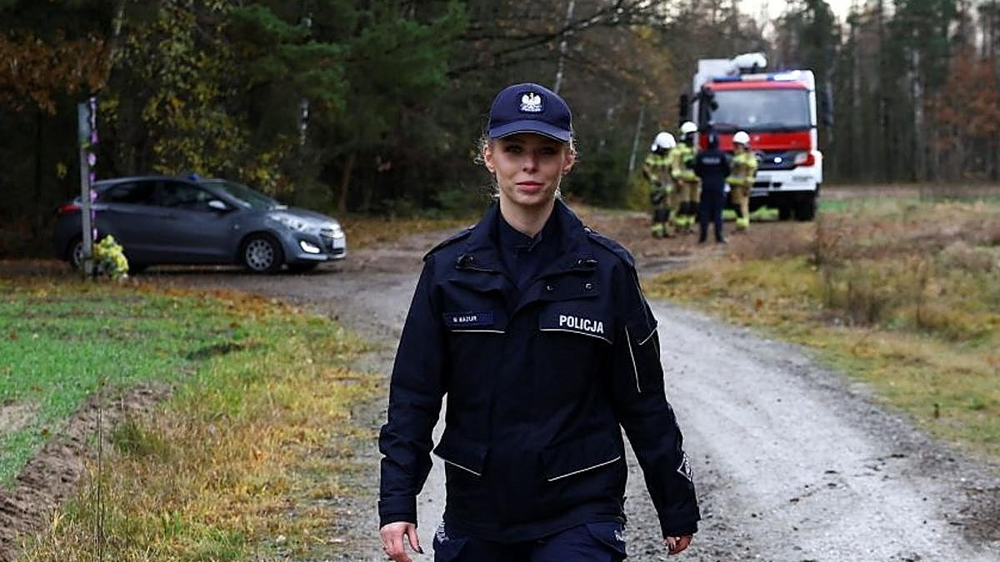
VIDEOGeopolíticaLa incursión de proyectiles rusos en Polonia pone a prueba la disuasión de la OTAN
El hallazgo de dos misiles y un dron a 60 kilómetros de la frontera desata alarmas en Varsovia. El Ejecutivo de Donald Tusk analiza el suceso como una maniobra calculada tras la cumbre entre Rusia, Estados Unidos y China.
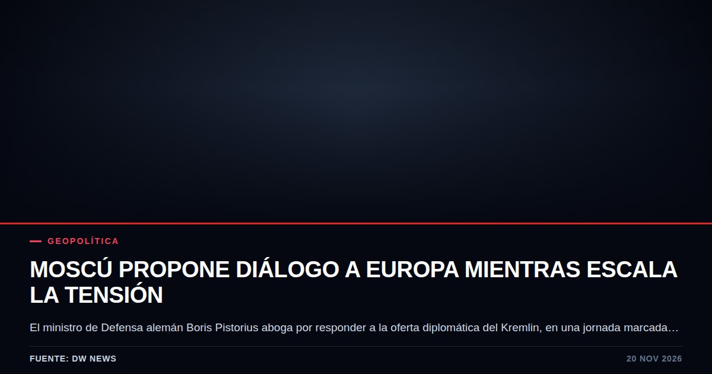
GeopolíticaEntre el diálogo diplomático y la guerra híbrida en Europa
Alemania aboga por evaluar la oferta de conversaciones del Kremlin en medio de nuevos incidentes de seguridad en Polonia y Dinamarca. Los ataques ucranianos a la logística en Crimea añaden presión al escenario de negociación.

La repatriación tardía de los españoles cautivos en el Gulag soviético
El regreso en 1954 de 286 prisioneros a bordo del buque Semíramis cerró un prolongado capítulo de la posguerra europea. La parálisis diplomática entre Madrid y Moscú mantuvo atrapados en el sistema penitenciario soviético a combatientes anticomunistas y exiliados republicanos.
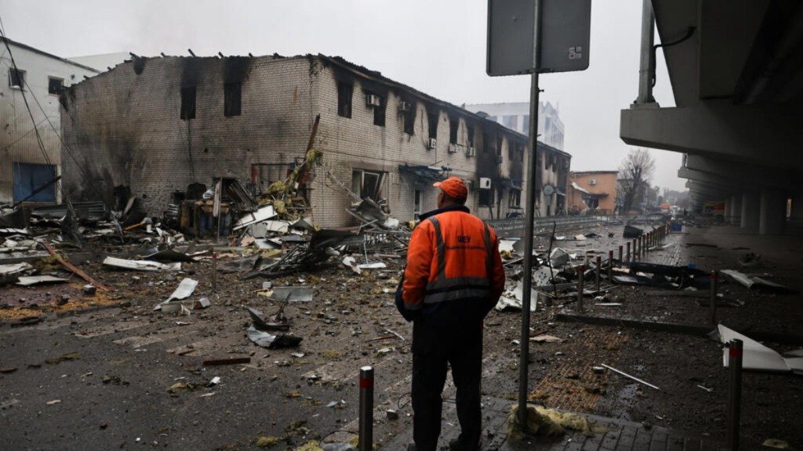
VIDEOGeopolíticaRusia escala la guerra de infraestructura con bombardeos a puentes clave en Kiev
Los recientes ataques sobre la capital ucraniana exponen un cambio táctico orientado a degradar arterias logísticas urbanas. La ofensiva cumple la advertencia del Kremlin tras los daños registrados en el puente de Crimea.
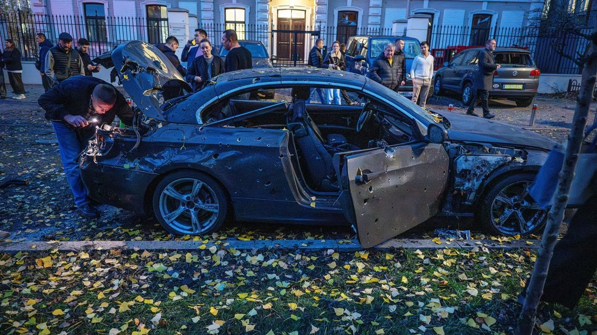
VIDEOGeopolíticaAtaque ruso contra Kiev golpea tres puentes clave y fractura la logística de la capital
Un bombardeo masivo con misiles balísticos deja tres muertos y 15 heridos en la capital ucraniana, paralizando pasos estratégicos sobre el río Dniéper.
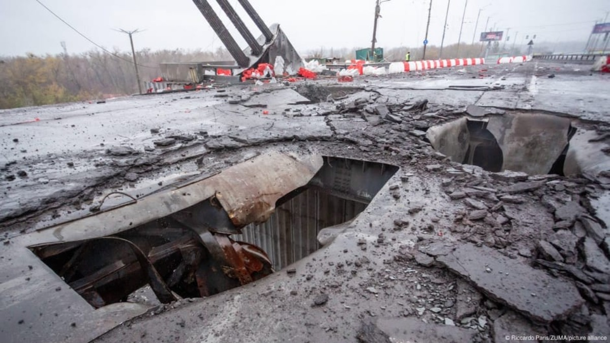
GeopolíticaEl ataque a los puentes de Kiev evidencia la nueva fase de estrangulamiento logístico
La ofensiva rusa con misiles y drones sobre tres pasos estratégicos del río Dniéper deja al descubierto una táctica de represalia y parálisis urbana en la capital ucraniana.
Europa se blinda en Berlín ante el nuevo equilibrio de poder pactado en Shenzhen
Treinta jefes de Estado se han reunido de urgencia en la capital alemana para contrarrestar el impacto de la cumbre entre Trump, Putin y Xi. La Unión Europea busca asegurar financiación para Kiev en 2027 en medio de crecientes dudas sobre el rol de Estados Unidos.
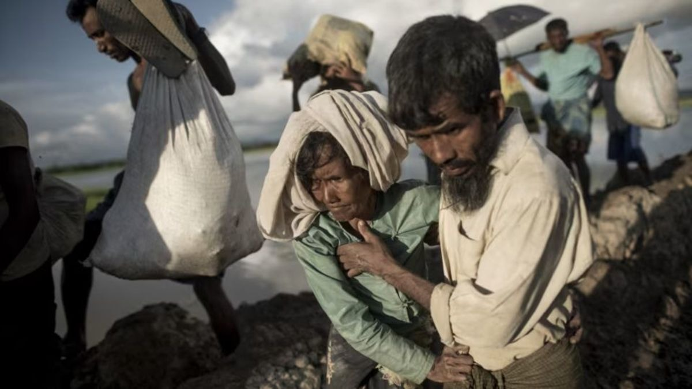
VIDEOGeopolíticaLa sentencia de la CIJ sobre Myanmar y el límite de la justicia global
El máximo tribunal de la ONU ha dictaminado que el Estado de Myanmar es responsable de genocidio contra la minoría rohinyá. Este análisis examina la brecha entre la victoria legal y la parálisis política que permite la impunidad.
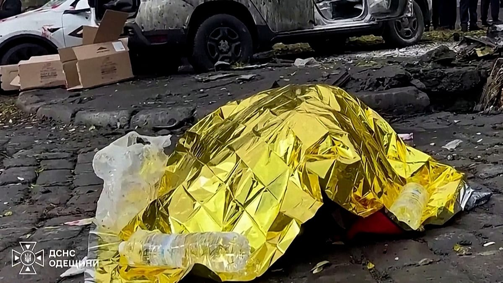
VIDEOGeopolíticaAtaque ruso contra Odesa golpea el núcleo histórico en plena antesala negociadora
Tres bombardeos consecutivos contra zonas residenciales de Odesa dejan cuatro muertos y al menos trece heridos, evidenciando una campaña militar que coincide con la espera de nuevas conversaciones mediadas por Washington.
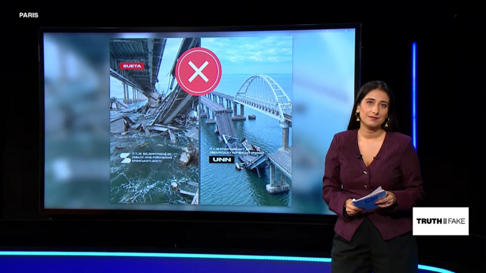
VIDEOGeopolíticaAtaque en el puente de Kerch y la ofensiva de videos falsos con inteligencia artificial
La infraestructura clave que conecta Rusia con Crimea sufrió un nuevo ataque verificado mientras una ola de videos sintéticos invadió las redes. El hecho evidencia cómo la desinformación con IA altera la percepción directa del conflicto militar.
La intervención militar de Bukele en Haití y el riesgo de la justicia por fuego aéreo
El presidente de El Salvador confirmó el bombardeo a la mansión de un cabecilla criminal en Puerto Príncipe, consolidando una intervención militar unilateral que entusiasma en las calles pero elude los controles institucionales.
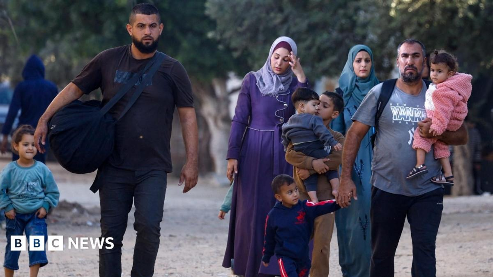
VIDEOGeopolíticaOperación israelí más allá de la Línea Amarilla reabre la fractura en el centro de Gaza
Las fuerzas terrestres de Israel cruzaron la Línea Amarilla en una incursión para destruir un túnel subterráneo, desatando el desplazamiento de residentes y una nueva crisis en torno al alto el fuego.
La tutela estadounidense sobre Venezuela se consolida mediante el adiestramiento del Ejército chavista
El Pentágono acuerda formar a las Fuerzas Armadas venezolanas diez meses después de la captura de Nicolás Maduro. Washington prioriza el control de los recursos petroleros y la estabilidad militar frente a un calendario de elecciones democráticas.
La cumbre de Shenzhen y el desgaste estratégico de Pekín en el Indo-Pacífico
La reunión entre Xi Jinping, Vladimir Putin y Donald Trump en China expone un reordenamiento de fuerzas marcado por la fricción tecnológica y la resistencia de Tokio.
La trilateral de Shenzhen reordena el mapa de la seguridad entre potencias
Donald Trump llegó a China para sostener una cumbre clave con Xi Jinping y Vladimir Putin. Los países europeos y Taiwán temen quedar excluidos de los pactos estratégicos.
La amenaza de una bomba sucia en Washington reactiva la máxima presión sobre Irán
El presidente Donald Trump confirmó que evalúa informes de inteligencia sobre un posible ataque iraní en la capital estadounidense. Teherán desmintió las acusaciones mientras el aparato de seguridad nacional ajusta sus protocolos.
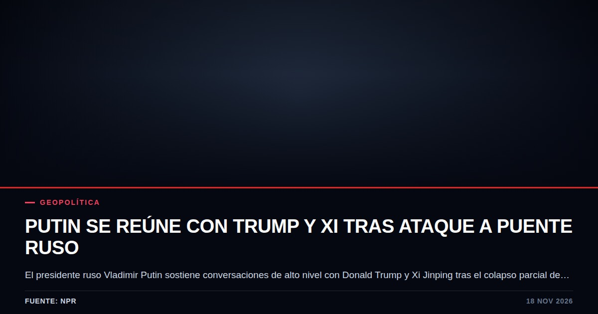
VIDEOGeopolíticaLa diplomacia de alto riesgo tras el ataque al puente ruso
La cumbre de Vladimir Putin con Donald Trump y Xi Jinping redefine la arquitectura de seguridad internacional. Moscú aprovecha el momento para forzar un diálogo trilateral sobre armamento y tecnología tras sufrir un duro golpe en su infraestructura.

La fragilidad digital bajo la lupa: el costo de la infraestructura obsoleta
Marco Rubio desmiente que las recientes interrupciones tecnológicas sean un ataque coordinado, mientras expertos cuestionan la resiliencia de los sistemas críticos de Estados Unidos.
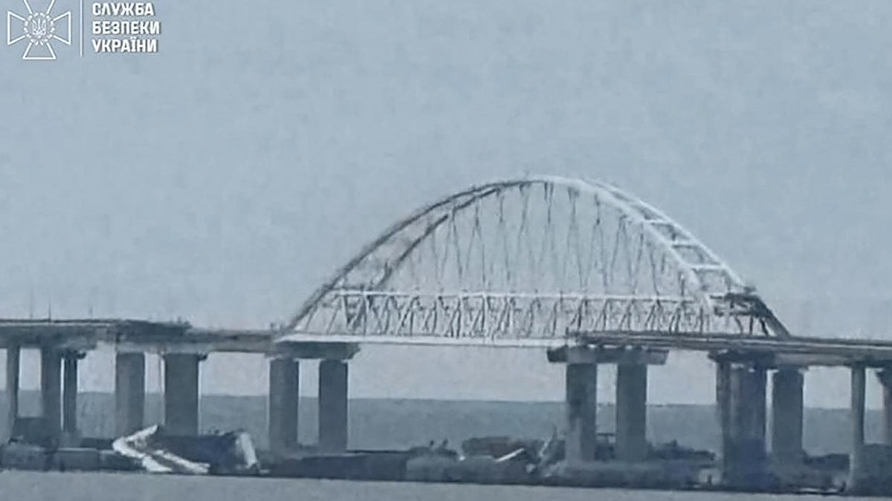
GeopolíticaEl golpe al puente de Crimea y su trasfondo en el ajedrez diplomático
Ucrania inutiliza tramos clave de la infraestructura que une Rusia con la península en una operación militar milimétricamente sincronizada con la diplomacia internacional.
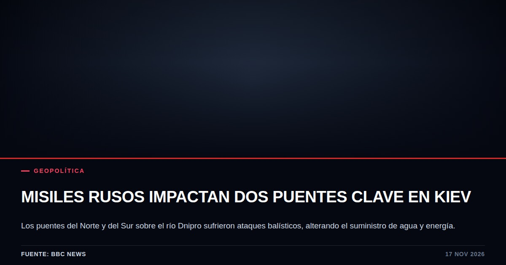
VIDEOGeopolíticaAtaques contra los puentes de Kiev exponen la urgencia de la presión militar en la diplomacia
El impacto de misiles rusos en dos cruces fundamentales sobre el río Dnipro coincide con conversaciones de alto nivel y cruces de ataques en Crimea.
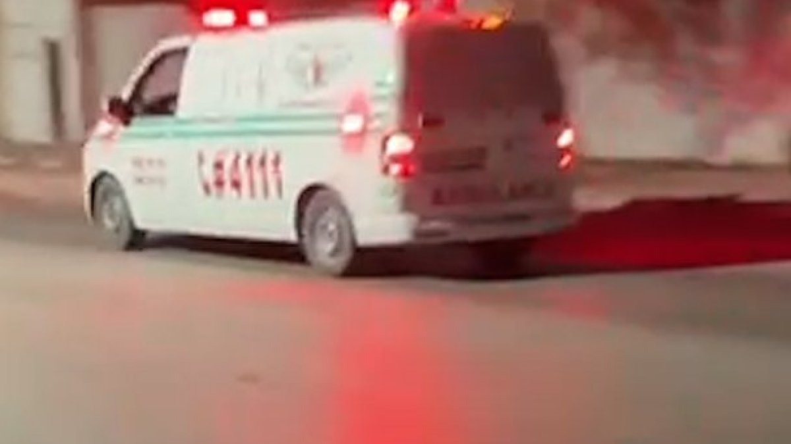
GeopolíticaViolencia armada en al Duyuk muestra el avance de la ocupación en Cisjordania
Un ataque perpetrado por colonos israelíes cerca de Jericó se cobró la vida de una mujer palestina. Detrás del hecho armado se esconde una campaña sistemática de toma de inmuebles que desmantela el control territorial local.
Europa reactiva la externalización migratoria con la mira puesta en Ruanda
Grecia, Alemania, Austria, Dinamarca y Países Bajos impulsan la creación de centros de deportación fuera de la Unión Europea para 2027, amparados en un cambio normativo comunitario.
La nueva era de James Bond bajo el control de Amazon MGM
Robert Pattinson ha sido seleccionado para interpretar al agente 007, marcando un cambio generacional en la franquicia bajo el mando de Amazon. La elección refleja una estrategia de marca que combina el peso institucional británico con la ambición del streaming global.
La renuncia de Yolanda Díaz a la OIT destapa concesiones ejecutivas a Washington
La vicepresidenta española retira su candidatura a dirigir el organismo laboral acusando a su cúpula de ahogar el voto interno y pactar con la Administración Trump. La maniobra expone la fragilidad financiera del multilateralismo.
La convalecencia de Helen Haines y el debate sobre la violencia política en Australia
La liberación del hospital de la diputada independiente Helen Haines tras un grave ataque automovilístico reabre el debate sobre la seguridad de los parlamentarios y la toxicidad del debate público en Australia.
 VIDEOGeopolítica
VIDEOGeopolíticaCien días de Abelardo de la Espriella: seguridad, reconstrucción y el ocaso de la oposición
El gobierno colombiano enfrenta su primer balance oficial en medio de atentados, cuestionamientos por fondos de ayuda y una crisis política opositora.
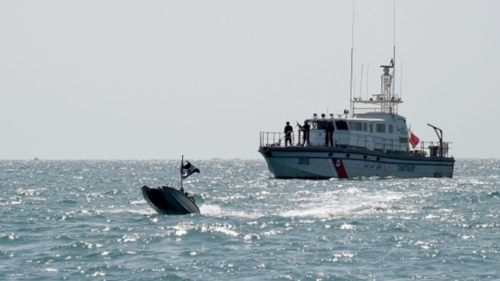
VIDEOGeopolíticaAtaque iraní en Bahréin y tensión en Hormuz desafían la arquitectura militar estadounidense
La Guardia Revolucionaria de Irán se atribuyó una incursión con drones contra instalaciones de Estados Unidos en Manama. La maniobra expone las vulnerabilidades estratégicas de las monarquías del Golfo Pérsico.

Cien días de Abelardo De la Espriella: militarización y reconfiguración del poder en Colombia
La llegada de Abelardo De la Espriella a la presidencia ha transformado el funcionamiento del Ejecutivo colombiano. Tras un inicio marcado por desastres naturales y operaciones armadas, el nuevo esquema de gobierno consolida una estrecha alianza con Estados Unidos.
Jordania condena a muerte a los autores del ataque a la iglesia de Hammoud
Un tribunal de Amán dictó la pena capital para los tres hombres que mataron a nueve personas en un funeral cristiano. Tras el atentado, el reino intensificó los ataques militares de represalia en suelo sirio.

La sentencia de muerte en Jordania y el frágil mito de la estabilidad interna
El Tribunal de Seguridad del Estado sentenció a pena capital a tres involucrados en el atentado contra una iglesia ortodoxa. La prisa judicial responde a la urgencia del régimen hachemita por silenciar fracturas sectarias en sus provincias periféricas.
La cumbre trilateral de Trump en Shenzhen y el fin de la ambigüedad nuclear china
Estados Unidos, Rusia y China coincidirán en una cumbre sin precedentes para abordar el control de arsenales nucleares tras la expiración del tratado New START. La maniobra busca arrastrar a Pekín a un diálogo formal, alterando el equilibrio estratégico global.
Washington presiona a Kiev para ceder el Donbás a cambio de el escudo de la OTAN
El presidente Volodymyr Zelensky reveló que emisarios estadounidenses plantearon retirar tropas del este ucraniano como condición para la adhesión a la Alianza. El giro expone las fisuras en la estrategia occidental.
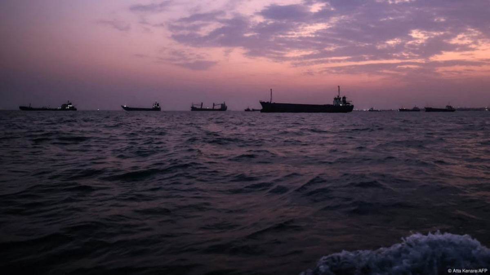
VIDEOGeopolíticaEl bloqueo silencioso en Ormuz: Irán intensifica la presión sobre el comercio petrolero mundial
La destrucción de tres petroleros por minas navales expone la estrategia de denegación de área ejecutada por Teherán. Con más de un centenar de incidentes registrados en 2026, el paso por el estrecho se vuelve inviable para el comercio energético.
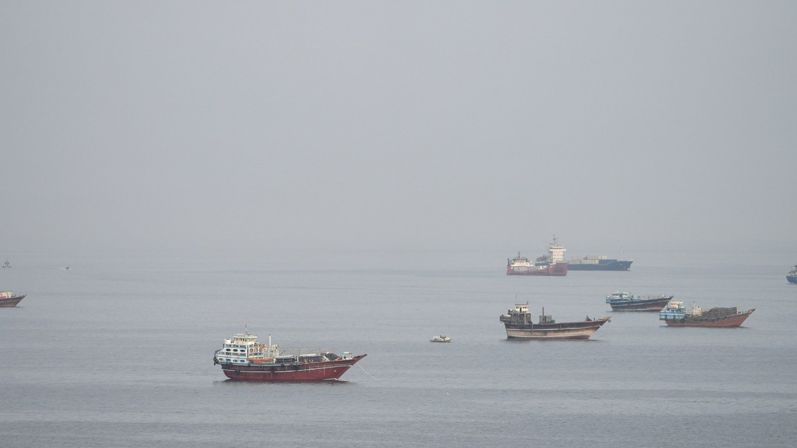
VIDEOGeopolíticaLa ONU confirma 25 marineros muertos por el conflicto en Hormuz
El balance presentado ante el Consejo de Seguridad refleja el impacto directo de las hostilidades en el comercio marítimo. Mientras Estados Unidos afirma que las rutas están libres, el tráfico comercial en el estrecho ha caído un 65 por ciento.
El escándalo en Nvidia desata una guerra de facciones en Washington por el control de chips
La salida de Jensen Huang tras ser vinculado a una trama de espionaje expone un enfrentamiento entre el Tesoro y Comercio por la exportación de microchips. El choque revela contradicciones estructurales entre la contención geopolítica y la captura de mercado en la carrera por la inteligencia artificial.
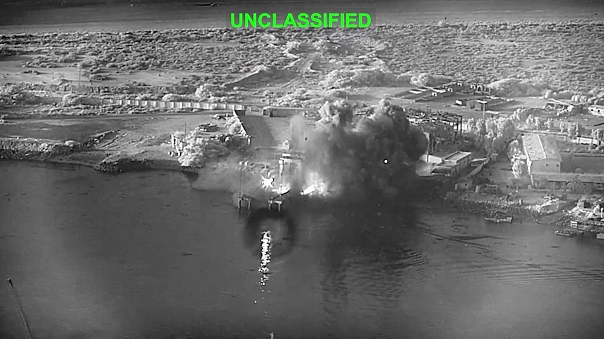
VIDEOGeopolíticaLa destrucción de un radar estadounidense en Baréin redibuja el conflicto en el golfo Pérsico
El Cuerpo de la Guardia Revolucionaria Islámica de Irán atacó una instalación militar en Baréin en respuesta a bombardeos en su territorio. El episodio evidencia la tensión por el control del estrecho de Ormuz ante una Casa Blanca que endurece su postura.